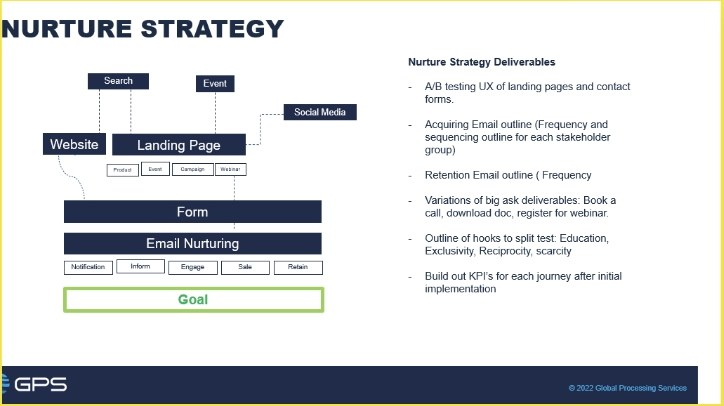
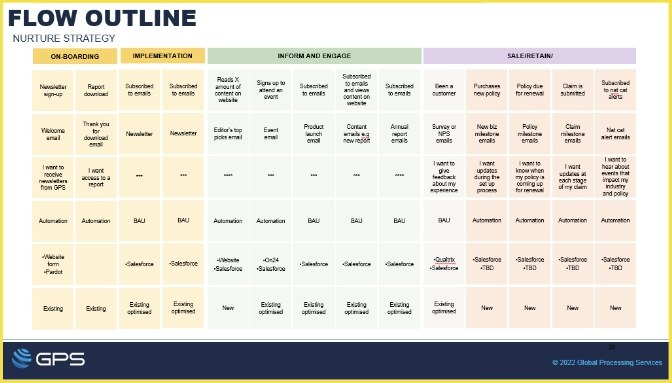

Global Processing Services (now Thredd) · Payments
Lifecycle Nurture & Campaign Automation
Designed and automated end-to-end nurture journeys across Pardot, Salesforce and Umbraco for two major campaigns — from first touch through onboarding, engagement and retention.
- 2Major GTM campaigns automated
- 4 lifecycle stagesOnboarding · Implementation · Inform & engage · Sale & retain
- 3 platformsPardot · Salesforce · Umbraco
The challenge
Two major campaigns needed coordinated targeting, nurture journeys, CRM updates and measurement across several platforms. Lead data was inconsistent, routing was manual and follow-up varied by campaign.
Objective
Turn campaign responses into pipeline consistently: cleaner audiences, automatic routing, personalised follow-up and a repeatable model for future campaigns.
Approach
Map the journey
Mapped every entry point — search, events, social, website and landing pages — through forms into nurture and on to a defined goal, across onboarding, implementation, engagement and sale/retain stages.
Clean & segment
Cleaned lead data, built segmentation and scoring, and set up lifecycle routing in Salesforce.
Automate
Built automated email journeys, follow-ups, CRM updates and campaign tracking across Pardot, Salesforce and Umbraco, with acquisition and retention sequences for each stakeholder group.
Test & iterate
A/B tested landing pages and forms, split-tested messaging hooks (education, exclusivity, reciprocity, scarcity) and big-ask variations, and set KPIs for each journey.
Outcomes
Performance data was used to refine messaging, audience rules and journey logic. The workflows and templates were built to be reusable, giving the business a repeatable nurture model for future campaigns rather than one-off builds.

